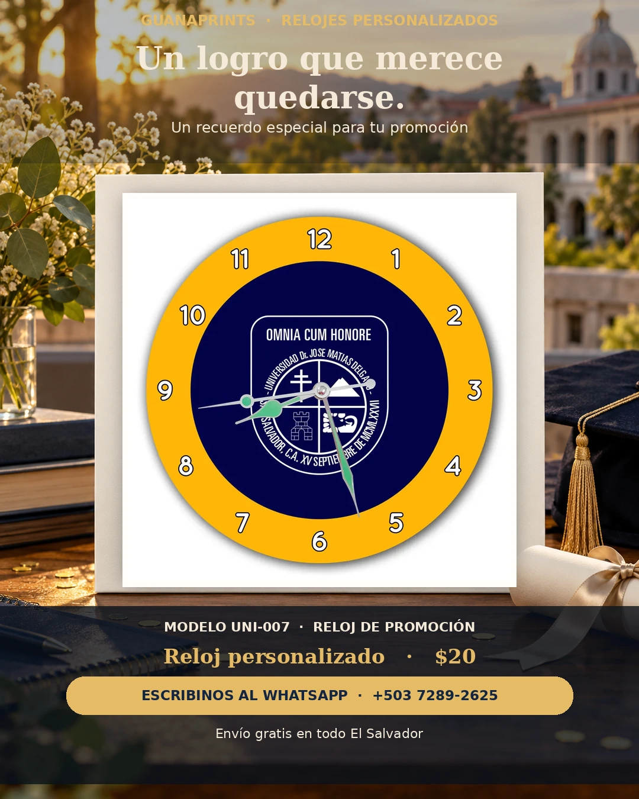
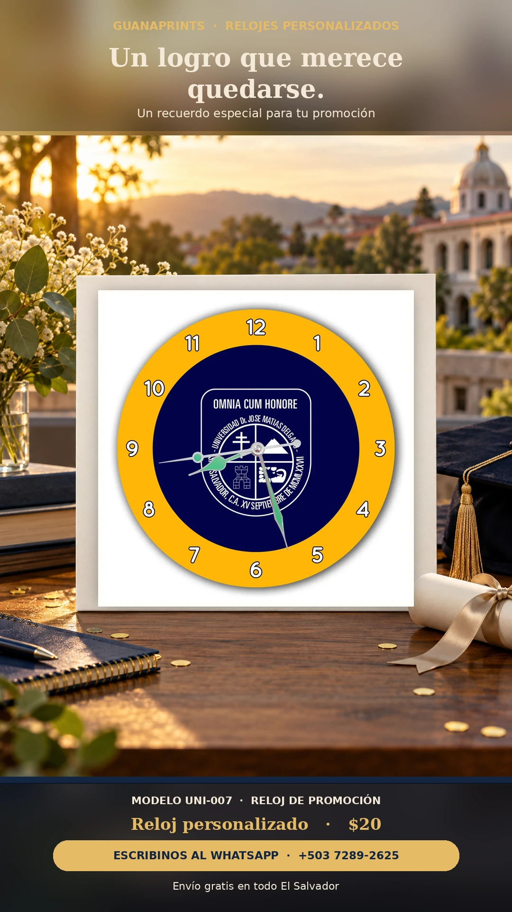

Universidades · promociones
Un logro que merece quedarse.


Se cierra una etapa, pero el orgullo de la promoción sigue. Personalizamos el reloj con los colores y el emblema de tu centro educativo. ¿Lo querés para tu grupo o para ese profe especial? Escribinos y lo armamos juntos.
Reloj personalizado · $20